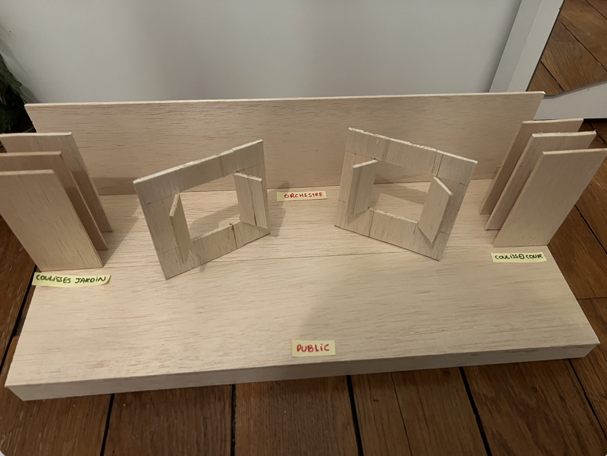

La maquette blanche
Une maquette "blanche" est une maquette très brouillon : la première modélisation 3D que l'on fait de l'espace, sans se soucier de l'esthétique, uniquement des échelles, dispositions et volume

Ce qu'elle doit représenter
- le plateau et les limites utiles de la scène
- les principaux murs et volumes
- les plateformes
- les éléments fixes et mobiles
- le mobilier volumineux
- les dégagements et circulations
Fabrication
- Échelle
- 1/50 (pour l'instant)
- Matériaux
- Balsa, Carton plume
avant la maquette
Le plan préliminaire
plan au sol préliminaire
dessin à faire
dessin à faire
points de vue
Sous plusieurs angles
vue de face, depuis la salle
vue de dessus
vue latérale
depuis un siège de côté
évolution
Les versions successives
V1
V2
V3